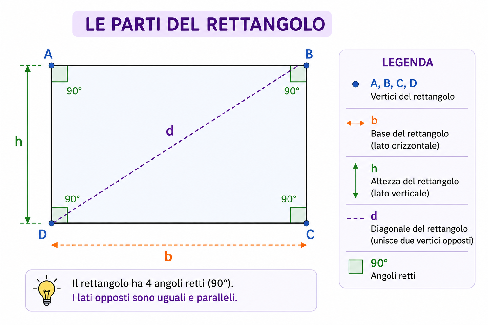

Impara le caratteristiche del rettangolo, il perimetro, l'area e la diagonale.
Il rettangolo è un quadrilatero con 4 angoli retti.
I lati opposti sono paralleli e uguali.
Le diagonali hanno la stessa lunghezza e si incontrano nel loro punto medio.

| Proprietà | Descrizione |
|---|---|
| Lati | I lati opposti sono uguali e paralleli. |
| Angoli | Tutti e quattro sono retti (90°). |
| Diagonali | Hanno la stessa lunghezza e si incontrano nel punto medio. |
| Assi di simmetria | Il rettangolo ha 2 assi di simmetria. |
Il perimetro è la somma di tutti i lati del rettangolo.
L'area è la misura della superficie occupata dal rettangolo.
La diagonale unisce due vertici opposti del rettangolo.
Per calcolarla si usa il Teorema di Pitagora.
Domanda
Quanti angoli retti ha un rettangolo?
Risposta
Quattro.
Domanda
Qual è la formula del perimetro?
Risposta
P = (b + h) × 2
Domanda
Qual è la formula dell'area?
Risposta
A = b × h
Domanda
Come si calcola la diagonale?
Risposta
Con il Teorema di Pitagora.